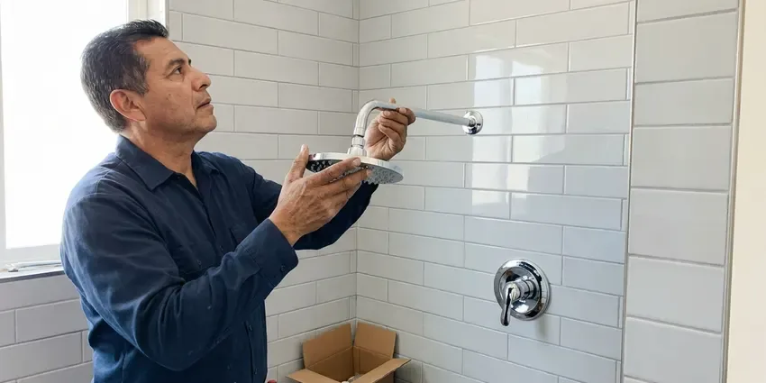

Sink Installation in Bluffton, SC
A new sink should sit level, drain fast and keep the cabinet dry. That is how we set them in Bluffton, SC.
- Undermount and Vessel Installs
- Workmanship Guaranteed
- Flat Written Price
- Leak Tested Before We Leave

New Counter in Bluffton, SC? We Set the Sink.
No hourly billing. One price covers the install.
New Sinks Set and Plumbed in Bluffton, SC
KBN Plumbing installs kitchen and bathroom sinks in Bluffton, from simple drop-in swaps to undermount bowls on new stone. The job starts with the cutout, because a sink that does not match its template will rock, leak at the rim or leave a gap you see every day. Then come the drain and supplies. Most single-sink installs take half a day.
Work we handle every week:
- Set undermount bowls with clips and a continuous silicone bead
- Replace old stops with quarter-turn valves
- Swap drop-in sinks in the same cutout

Additional Bathroom Plumbing Services in Bluffton, SC
From toilets to showers, our bathroom plumbing team in Bluffton, SC repairs, installs, and replaces every fixture with clean, code-compliant work.


Customers
Why Choose KBN Plumbing for Sink Installation in Bluffton, SC?
Undermount and vessel sinks punish shortcuts. An undermount bowl that is glued without clips can drop months later, and a vessel bowl set on the wrong drain can overflow because there is no overflow channel to catch it. We use clips and the correct drain.
- Foundation Integrity, A dry install keeps water out of the subfloor and the framing below the sink.
- Transparent Pricing, One written price for the whole install before any work starts.
- Proper Support, Undermount bowls get clips and adhesive, not just a bead of silicone.
Citywide Coverage
Remodels across town keep our crews busy. We work with local counter shops and cabinet crews often, so we can slot in right behind them. That saves you a week.
Experienced Team
Brand knowledge saves time. We know which Kohler, Elkay or Blanco sinks ship with clips and which need extra hardware. Missing parts mean delays.
Safety-First Approach
Water gets shut off and tested first. Stops or the main get closed and tested at the faucet, and any stop that leaks gets replaced. We never cut into a live line.
Trusted Certified Bluffton Plumbing Services Professionals
At KBN Plumbing, we take pride in licensed, certified plumbing services throughout Bluffton, SC. Those papers on the wall mean something. Our plumbers hold recognized industry credentials, and they follow strict safety and quality rules on every repair, installation and maintenance call we run.
Call Us Now PHCC Plumbing Contractor Recognition
PHCC Plumbing Contractor Recognition Better Business Bureau (BBB) Accreditation
Better Business Bureau (BBB) Accreditation Angi Certified Pro
Angi Certified Pro ISO 9001 Quality Management Certification
ISO 9001 Quality Management CertificationSink Installation Work in Bluffton, SC
Undermount Sink Installation in Bluffton
Undermount sinks hang from the countertop. We set the bowl with the clips or anchors the stone shop provides, run a continuous bead of 100 percent silicone around the rim, and leave it braced while the adhesive cures overnight. Adhesive by itself will not hold it. Plumbing goes on the next day.

Double Vanity Sink Installation in Bluffton
A second bowl means a second drain and two more supplies. We tie both drains into the wall with either two separate traps or a continuous waste to one trap, depending on the spacing, and add a new pair of stops for the second faucet. We check the vent size too. Both bowls should drain without gurgling.
Drop-In Sink Installation in Bluffton, SC
Drop-in sinks are the most forgiving style. The rim hides small cutout flaws, so laminate tops take a drop-in with just a size check and the right sealant. Clips pull it tight to the counter. Stainless drop-ins weigh very little.
Sink Replacement and Upgrades in Bluffton
Upgrading the sink is a cheap way to refresh a room. A same-size drop-in swap usually takes a morning, and a deeper bowl may only need a new trap. Countertop changes add time. We tell you which one you are looking at.
Commercial Sink Installation in Bluffton, SC
Commercial kitchens need sinks the health inspector will sign off on. A three-bay sink drains indirectly through an air gap to a floor sink, and hand sinks need tempered water near each prep area. We read the plan review first. Mop basins and grease interceptor ties are part of it.
Leak-Proof Sink Connections in Bluffton, SC
Every joint gets tested before we leave. We fill the bowl to the overflow, pull the stopper, and watch every nut under the cabinet at full flow with a flashlight and a dry paper towel. A towel shows a weep fast. Pipe dope goes on threads, not compression fittings.
Faucet and Disposal Hookup in Bluffton, SC
New sinks often get a new disposal. We mount the disposal on a fresh flange with putty, connect the dishwasher knockout so the hose drains through it, and confirm the outlet sits above the trap inlet so it drains properly. An unpunched knockout backs up the dishwasher. We run both before leaving.

Sink Installation Cost Factors in Bluffton, SC
Labor is the main cost driver. Moving the drain or adding a second bowl adds hours, and a straight drop-in swap is the cheapest. The sink price is separate. You can buy it or we can.
Nearby Sink Installers Near Me in Bluffton, SC
Install near me should include a firm date. We book sink installs on a specific day, give you a two-hour arrival window, and coordinate with your counter installer so the plumber is not standing in the kitchen waiting on stone. Booking happens over the phone. The number is (864) 588-3813.
Our trucks work in Bluffton every week. That keeps the drive short and the arrival window tight, and it means we already know which supply houses near you stock the bowl or faucet you picked. We grab parts on the way over.
KBN Plumbing at a Glance
- Licensed and insured plumbers serving Bluffton, SC
- Same-day appointments and 24/7 emergency response
- Clear written estimates, no hidden fees
- 4.8-star rated by 596+ South Carolina customers
Bluffton Map
Bluffton Information
- Population
- 35,243
- Area codes
- Local
- Service area
- Bluffton and towns within a 40 mile drive
- Nearby
- Hilton Head Island, Summerville, North Charleston, Charleston
Private wells are common outside town limits, and some South Carolina well water carries iron, low pH or sediment that can stain fixtures and wear down water heaters. Plenty of Bluffton, SC homes still have their original shutoffs and drain stubs, and a sink install is the best time to replace them.
Expert Services
Reach out to KBN Plumbing for reliable plumbing work done by licensed pros in Bluffton, SC.
Our Specialized Plumbing Services in Bluffton, SC
At KBN Plumbing, we handle the full list of plumbing services across Bluffton, SC. We go from leak detection all the way to full system installations, for homes and commercial buildings, and we do it quickly at a fair price. Here are the core services we offer:


What Happens on Sink Install Day in Bluffton, SC
Here is what to expect when we install your new sink in Bluffton.
Request a Quote
Call (864) 588-3813 and tell us the sink style. You get a flat price.
Remove and Prep
We pull the old sink, cap the lines and replace worn stops.
Install and Test
The new sink is set, sealed and plumbed, then filled and drained to check for drips.
Frequently Asked Questions About Sink Installation in Bluffton
Plan on $200 to $600 in labor. The sink style drives most of the cost, then any drain moves or stop replacements. We give you a written quote.
Yes, that is routine work. After the fabricator polishes the cutout, we clip and seal the bowl and return after cure to plumb it. The shop drills faucet holes too.
Usually the drain is wrong. Bowls without overflows need an unslotted drain, and a small grid drain or poor venting slows them down. A bigger drain usually fixes it.
Most take two to four hours. Drop-ins finish in a morning, but undermounts need a second short visit after the adhesive cures. Both visits get booked at once.
Cracks are the big one. Cracks, glaze chipped to the base, a dented bowl or a drain fused to the basin all point to replacement. Stains alone are not a reason.
Start with the faucet. The number of holes in the sink or counter has to match the faucet you want, and a vessel bowl needs a taller or wall-mounted faucet, so picking the faucet first saves a return trip to the store. Bowl depth matters next.
Either works for us. Plenty of homeowners pick a sink at a showroom or online and have it delivered, and we can also source one from our supply house at contractor pricing if you would rather skip the shopping. Parts we supply carry our warranty.
Yes, in writing. Labor is covered for our connections and mounting, and many faucets carry a lifetime warranty from the maker. Save the paperwork.
What People Are Saying About Our Plumbing Experts?

Lisa C.
Water was pouring out from under the washing machine on a holiday weekend. KBN Plumbing talked me through closing the valves over the phone and had a plumber at the house within ninety minutes. It was a burst fill hose.
Emergency Plumbing · Goose Creek, SC
Brian W.
I smelled gas behind the dryer and called right away. The plumber found a corroded flex connector, replaced it, and pressure tested the whole line before turning the gas back on. He let me watch the gauge hold steady for fifteen minutes.
Gas Line Repair · Bluffton, SCGreg S.
I manage a small strip center with six tenants. KBN Plumbing handles our annual backflow testing and fixed a recurring clog in the shared sewer line that had been backing into the nail salon. Their reports come in clean and on time.
Commercial Plumbing · Hilton Head Island, SCEmily R.
The shutoff valve under our kitchen sink snapped off in my hand on a Sunday morning. KBN Plumbing had someone out by early afternoon. He replaced both angle stops with quarter turn valves and showed me where our main shutoff was, which I honestly did not know.
Plumbing Repair · Mount Pleasant, SC
Nathan E.
Our tankless heater kept throwing an error code and shutting off mid shower. The tech flushed the heat exchanger, which was full of scale, and replaced a bad flow sensor. Hot water has been steady for half a year now.
Water Heater Repair · Hilton Head Island, SC
Patricia H.
We had a slab leak that two other companies could not find. KBN Plumbing located it in under an hour with a listening device. They rerouted the line through the attic instead of breaking up the floor, so we kept our kitchen tile.
Slab Leak Repair · Charleston, SC